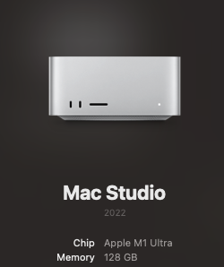
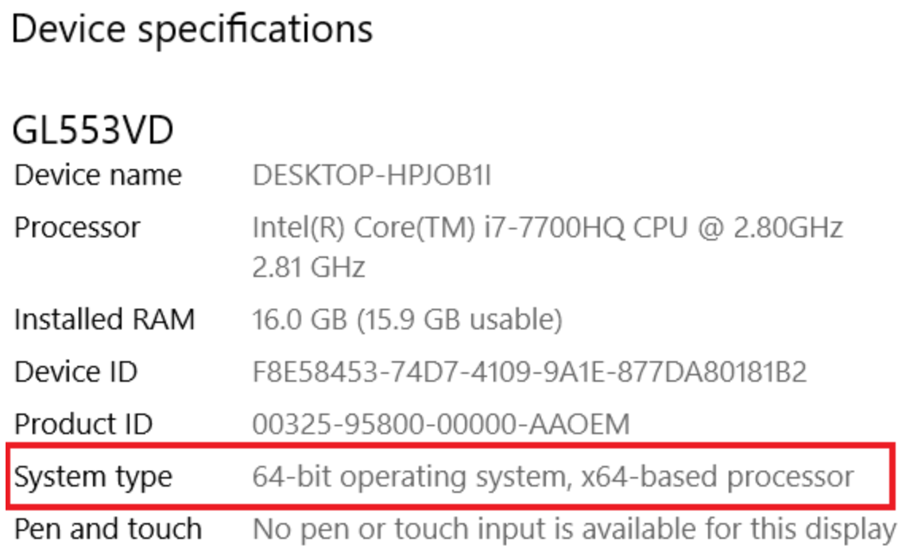
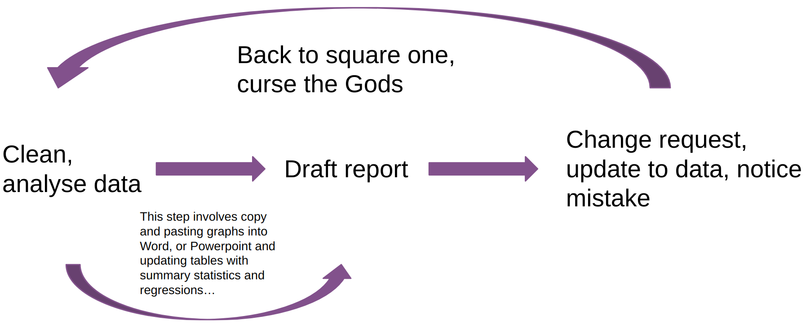
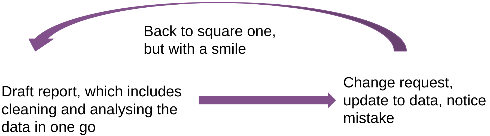

## MacOS Users may need to install the rstudioapi manually first
install.packages("rstudioapi")
## Run the command to install xcode-select
rstudioapi::terminalExecute(
command = "xcode-select --install"
)2 Installing R
Important Note Regarding Chromebooks
If you have a Chromebook rather than a Windows or Mac computer, these installation instructions will not work. While there are ways to install R, RStudio, and other software on Chromebooks the process for doing so is different depending on what version of ChromeOS you have and may not be supported on older models. If this problem applies to you, please make an appointment or come by during office hours as soon as possible so we can figure out what the appropriate steps to get everything up and running are.
The easiest way to install R is to go to this website and select the operating system you use.
For Mac users it is important to select the correct download for your chip. If you are unsure click on the Apple logo in the top left of your screen and then click about this Mac.

I would download the one that says arm64. If your chip says “intel something or other” then you would click on the one that says Intel Macs.
XQuartz for MacOS Users
If you downloaded either of the MacOS versions above, you also need to download and install XQuartz. This step is only for MacOS users.
For Windows please click on this link and then follow this link and download the appropriate version of the software for your operating system. To check whether you need the X64 version or the X86 version press the windows + x keys and then click on system. You are looking for something that looks like this

Then choose 64 or 86.
2.1 R Tools and XCode
Occasionally some of the packages we will use may not be available for your version of R. This is not a problem since many package writers have the code online and we need to download them. This does require we have some additional things on our computer.
Required Step
For some of the packages we will need we may need to have some additional things installed in order for it to work.
If you are on a Windows operating system, you will need to install Rtools 4.3 which can download by clicking on the hyperlink below. Rtools is required to install packages from source and, more importantly, anything that requires a C++ compiler.
Once again, during the installation process you can just leave things at their default settings, especially in the case of the installation directory since changing its default locations may result in errors during package compilation. After you have completed this step, you will need to install the required packages by running the code below in order to successfully render the Quarto document for problem set 0. If you encounter errors when rendering the document, please ensure you have these packages installed.
Required Step
For some of the packages we will need we may need to have some additional things installed in order for it to work. This is a required step for much of the code we will use throughout this course.
If you are on a MacOS operating system, you will need to install the Xcode developer tools. You can obtain the full MacOS development environment from the Apple AppStore using the link below. Xcode is required to install packages from source and, more importantly, anything that requires a C++ compiler, including though not limited to Stan.
However, since downloading this can be extremely time consuming given the large size of the full development tools suite an alternative option is to install a paired down version that provides the tools necessary for our purposes in this course without the overhead of the full Xcode development environment. You can install the paired down version of Xcode by running the code below in the RStudio console. Just copy and paste and hit enter.
2.2 Installing Rstudio
So now that we have installed R we should install Rstudio. Rstudio is simply a way to interact with R that is a lot more user friendly. You can google RStudio Desktop Download or you can simple click on this hyperlink and it will take you to the download page. Again just install the version of Rstudio that works with your operating system.
2.3 Quarto
If you have read through the course syllabus you will notice that I am having you work in something called Quarto. You may be asking your self what is Quarto I have only used MS Word. Quarto embraces something called literate programming. Essentially what this means is that words and code appear side by side. This guide was created in Quarto and what I use the most. Since we are going to produce lots of graphs and tables in this class the typical workflow for that would look something like this

This involves lots of work for yourself. If you are doing a data analysis project where you produce 5 plots each time you make minor changes to those plots you are going to have to remember where those plots are, copy and paste them over, resize them or reformat them. This gets infinitely more annoying if you are reporting numbers in tables or in text. In some cases data analysis teams are constantly updating reports for stake holders based on new data. So if you have a report that says our “based on our model we would expect an increase of 8 blah blahs” and later you rerun the analysis cuz there was new data or you notice a mistake you have to figure out where exactly you said “8 blah blahs” and switch them.
In Quarto this process is a whole lot easier. The loop looks like this

You are changing the code for your figures in the document itself. So any changes are going to appear in the document automatically! You can also use code inline to automatically update numbers!
data <- 1:100
avg <- mean(data)The average for our data is 50.5. In the document it looks like this
```{r}
data <- 1:100
avg <- mean(data)
```
The average of our data is `r avg`You may have noticed that our data only goes from 1 to 100. We can make a quick modification and the document will update the document accordingly without any copy and pasting!
data <- 1:1000
avg <- mean(data)The average of our data is 500.5
2.4 Navigating Rstudio
2.4.1 R? Rstudio? Whats the Difference?
- R is a statistical programming language
- RStudio is a convenient interface for R (an Integrated Developer Environment, IDE)
- At its simplest:
- R is like a car’s engine
- RStudio is like a car’s dashboard

The most common way that we interact with R is through Rstudio you can technically run R by just opening R and typing in code. But most people do not do this. It is not especially friendly to work in there is no syntax highlighting no code completetion. There isnt even really an option to add keyboard shortcuts. It is kind of like a Formula 1 car it can go real fast but it is not a comfortable drive.
Rstudio has lots of handy features that help you. Much like a car you and I would drive. If we didn’t have the dashboard but still had the engine and some wheels and a steering we could drive the car if needed. However a car with a dashboard lets us figure out what the car is doing more easily.